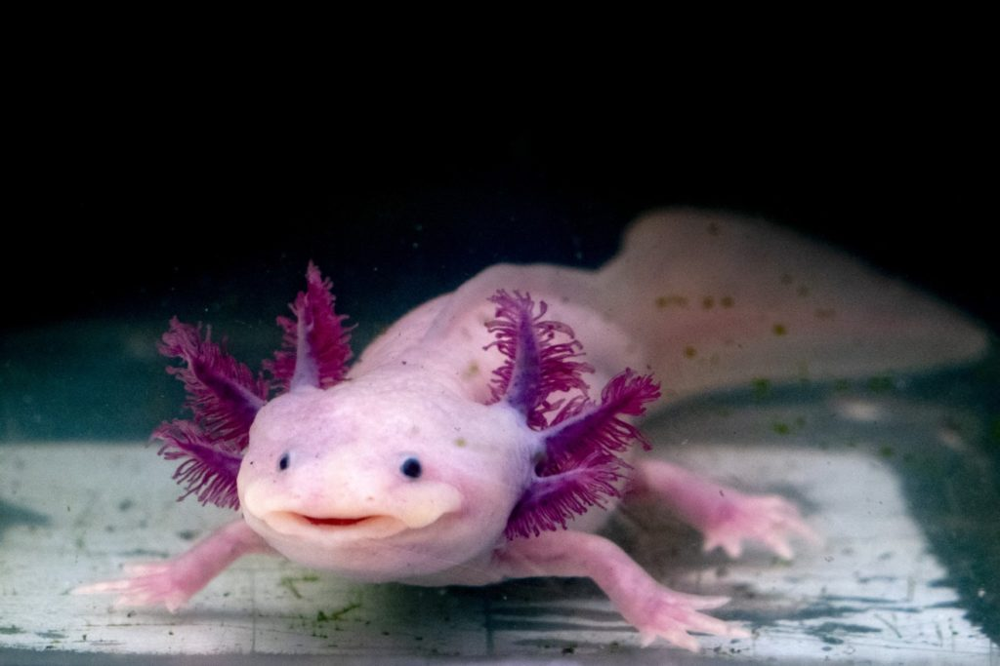
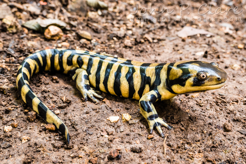
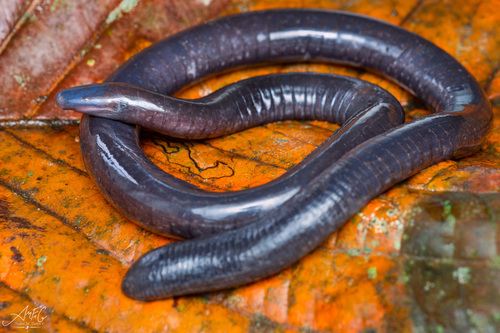
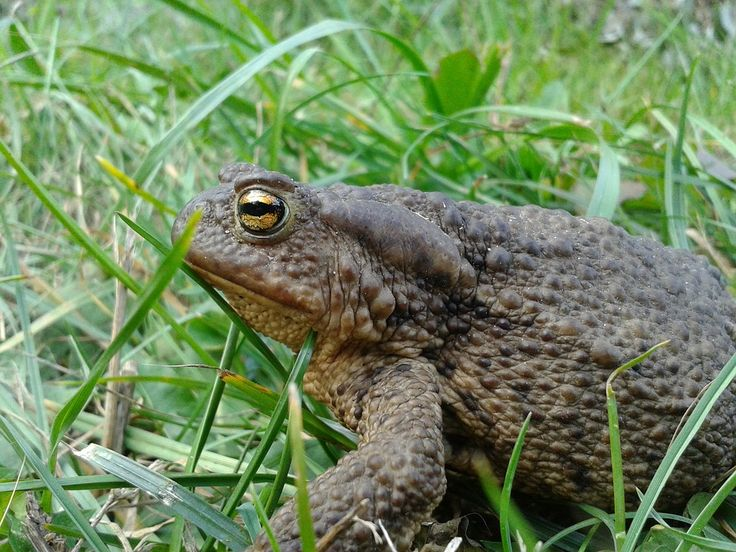

ANFIBIOS
menu
MENU
RANA
AJOLOTE
SALAMANDRA TIGRE
CECILIAS
SAPO

Las ranas suelen habitar en ambientes húmedos, como estanques, lagos, ríos, charcos, bosques tropicales y áreas cercanas a cuerpos de agua. La humedad es esencial para su supervivencia, ya que muchas especies de ranas tienen una piel permeable a través de la cual absorben agua y oxígeno. Además, algunas ranas se encuentran en zonas más áridas, pero generalmente requieren de agua para reproducirse y desarrollarse.
caracteristicas de la rana
- Piel húmeda y permeable: Su piel les permite respirar a través de ella, absorbiendo oxígeno y agua, lo que las hace vulnerables a la deshidratación si el ambiente es muy seco.
- Extremidades posteriores largas: Sus patas traseras son adaptadas para saltar grandes distancias, lo que les ayuda tanto para moverse rápidamente como para escapar de predadores.
- Ojos saltones: Sus ojos están ubicados en la parte superior de la cabeza y pueden moverse independientemente, lo que les permite estar atentos a su alrededor mientras permanecen parcialmente sumergidas en el agua.
- Respiración doble: Pueden respirar tanto a través de los pulmones como de su piel, lo que les permite adaptarse a diferentes condiciones ambientales, como estar sumergidas en agua o en tierra.
- Reproducción acuática: Generalmente, las ranas ponen sus huevos en el agua. De estos huevos nacen renacuajos, que pasan por una fase de metamorfosis hasta convertirse en ranas adultas.
VOLVER AL MENU

El ajolote (Ambystoma mexicanum) es originario de los lagos de Xochimilco en México, aunque su hábitat natural ha sido severamente reducido debido a la urbanización. Se encuentra principalmente en cuerpos de agua de aguas frías, dulces y lentas, como lagos y canales. Prefiere ambientes con vegetación densa y fondos fangosos, lo que le permite esconderse de posibles depredadores.
caracteristicas del ajolote
- Regeneración: Es famoso por su capacidad de regenerar partes del cuerpo, como extremidades, la columna vertebral e incluso órganos como el corazón y el cerebro.
- Branquias externas: Los ajolotes conservan sus branquias externas durante toda su vida, lo que les da una apariencia característica de "ramitas" rojas en ambos lados de su cabeza.
- Neotenia: Mantienen características de larvas a lo largo de su vida adulta, como la conservación de sus branquias y la dependencia del agua para respirar, lo que los convierte en un ejemplo de neotenia.
- Tamaño: Pueden alcanzar un tamaño de hasta 30 centímetros de largo.
- Color: Aunque su color natural es el marrón o grisáceo, en cautiverio se crían en variedades albinas, conocidas por su piel de tono blanco rosado.
VOLVER AL MENU

La salamandra tigre (Ambystoma tigrinum) es una especie de salamandra que se encuentra principalmente en América del Norte. Habita en áreas boscosas, praderas, humedales y zonas cercanas a cuerpos de agua como estanques, charcos y riachuelos. A diferencia de las ranas, las salamandras tigre son más terrestres en su fase adulta, pero aún dependen del agua para su reproducción.
caracteristicas de la salamandra tigre
- Piel gruesa y húmeda: La salamandra tigre tiene una piel lisa, gruesa y húmeda, lo que le permite mantener la humedad corporal y facilita la respiración a través de la piel.
- Colores brillantes y patrones: Su nombre proviene de los patrones de color amarillo brillante y negro que adornan su cuerpo, lo que le da una apariencia similar a la de un tigre. Esta coloración puede servir como advertencia para los depredadores sobre su posible toxicidad.
- Extremidades cortas: A diferencia de las ranas, las salamandras tigre tienen patas más cortas y gruesas. Aunque son capaces de moverse rápidamente en tierra, no son tan ágiles como las ranas para saltar.
- Reproducción acuática: Al igual que las ranas, la salamandra tigre pone sus huevos en cuerpos de agua donde los embriones se desarrollan en renacuajos antes de transformarse en salamandras juveniles, en un proceso de metamorfosis.
- Veneno en sus glándulas: Las salamandras tigre tienen glándulas que secretan una sustancia tóxica como defensa contra los depredadores. Si se sienten amenazadas, pueden liberar este veneno para disuadir a los posibles atacantes.
VOLVER AL MENU

Las cecilias son un grupo de anfibios pertenecientes al orden Gymnophiona. A diferencia de las ranas y las salamandras, las cecilias tienen una apariencia bastante peculiar, ya que son animales alargados, sin extremidades y con una piel que les da un aspecto similar al de los gusanos o serpientes.Las cecilias suelen habitar en suelos húmedos y en zonas tropicales, como selvas y bosques, principalmente en América Central, América del Sur, África y el sudeste asiático. Son animales subterráneos, por lo que pasan la mayor parte de su vida enterradas en la tierra, en la hojarasca o en las zonas húmedas de su entorno.
caracteristicas de la cecilia
- Cuerpo alargado y cilíndrico: Las cecilias tienen un cuerpo largo, flexible y cilíndrico que les permite moverse fácilmente bajo tierra. No tienen patas, pero poseen estructuras internas que les permiten desplazarse de manera ondulante.
- Piel lisa y húmeda: Su piel es suave, húmeda y mucosa, lo que les ayuda a mantener la humedad y facilita la respiración a través de la piel, similar a otras especies de anfibios. Además, la piel tiene una textura segmentada, similar a los anillos de una serpiente.
- Ausencia de extremidades: A diferencia de las ranas y salamandras, las cecilias no tienen patas. Esta es una de las características que las hace tan distintas a otros anfibios. Su cuerpo está adaptado para excavar y desplazarse de manera subterránea.
- Visión reducida: Las cecilias tienen ojos muy pequeños, a menudo cubiertos por piel o hueso, lo que indica que no dependen mucho de la vista. Su principal sentido es el tacto, utilizando la vibración en el suelo para orientarse y detectar presas o peligros.
- Reproducción interna: Las cecilias tienen un sistema de reproducción que involucra la copulación interna. En algunas especies, las hembras tienen una camada de crías que se desarrollan internamente antes de nacer, mientras que en otras, los huevos se incuban fuera del cuerpo de la madre, pero dentro de un entorno seguro.
VOLVER AL MENU

El sapo común (Bufo bufo) es una especie de sapo que se encuentra en una gran parte de Europa, Asia y algunas áreas del norte de África. Es conocido por su apariencia robusta y su comportamiento característico. A diferencia de las ranas, los sapos tienen una piel más rugosa y seca, y suelen pasar más tiempo en tierra que en el agua.El sapo común se encuentra principalmente en bosques, jardines, praderas, y en zonas cercanas a cuerpos de agua, ya que requiere agua para su reproducción. Durante la mayor parte de su vida, se encuentra en tierra, y solo se acerca al agua para reproducirse en primavera y verano. Prefiere lugares frescos y húmedos, pero también puede encontrarse en áreas más secas si tiene acceso a agua para su ciclo de vida.
caracteristicas del sapo
- Piel rugosa y verrugosa: La piel del sapo común es gruesa y tiene una textura verrugosa, lo que le da un aspecto característico. Esta piel también secreta una sustancia tóxica que sirve como defensa contra los depredadores.
- Patrones de colores apagados: Aunque pueden variar en color, los sapos comunes suelen tener tonos de marrón, gris y verde oscuro. Su coloración camuflada les ayuda a esconderse de los predadores en su entorno terrestre.
- Cuerpos robustos y cortos: A diferencia de las ranas, los sapos tienen cuerpos más gordos y compactos, con patas traseras más cortas, lo que les permite moverse de manera más lenta y saltar distancias más cortas.
- Glandes parotoides: Los sapos comunes tienen glándulas parotoides ubicadas detrás de los ojos. Estas glándulas producen toxinas que sirven como mecanismo de defensa contra depredadores. Si se sienten amenazados, pueden liberar una sustancia irritante de estas glándulas.
- Reproducción acuática: Aunque pasan la mayor parte de su vida en tierra, el sapo común se acerca al agua solo para reproducirse. Durante la temporada de apareamiento, los machos emiten un canto característico y las hembras ponen sus huevos en el agua, que se desarrollan en renacuajos antes de pasar a su forma adulta.
VOLVER AL MENU